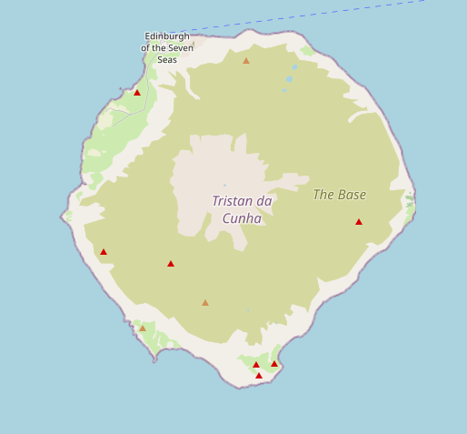
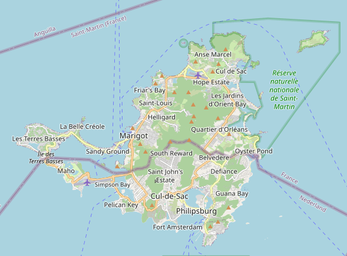
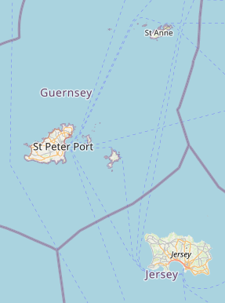

MXTHL3
Îles
La plus isolée

île de Tristan da Cunha, océan Atlantique Sud, Royaume-Uni
Entre deux nations

Saint-Martin (partie nord, France) - Sint Maarten (partie sud, Pays-Bas)
Un statut particulier

Jersey, Guernesey et leurs dépendances (près de la péninsule du Cotentin)